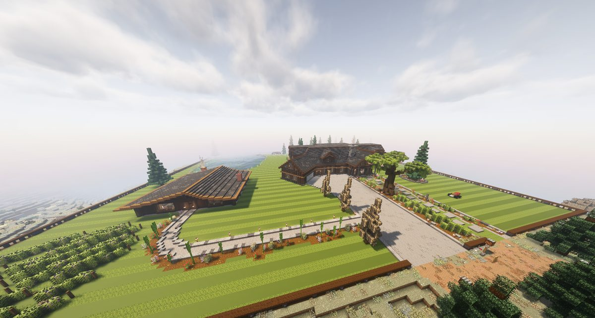
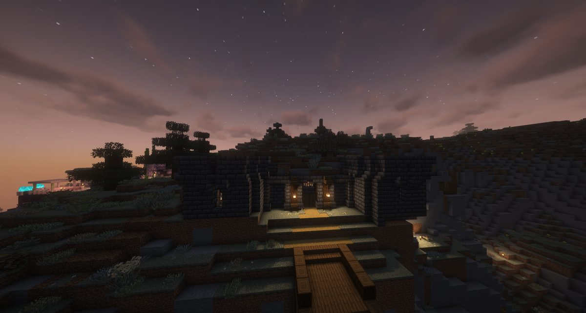
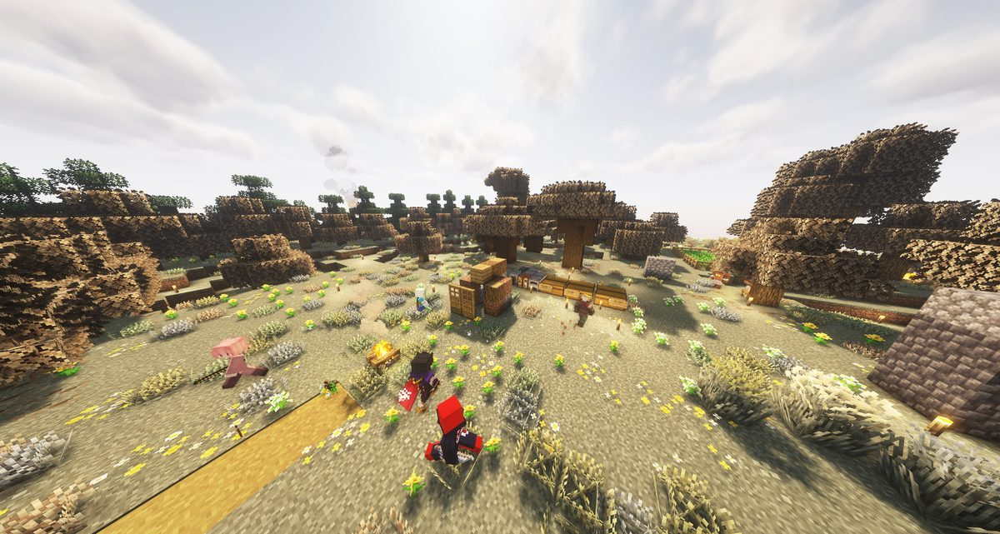
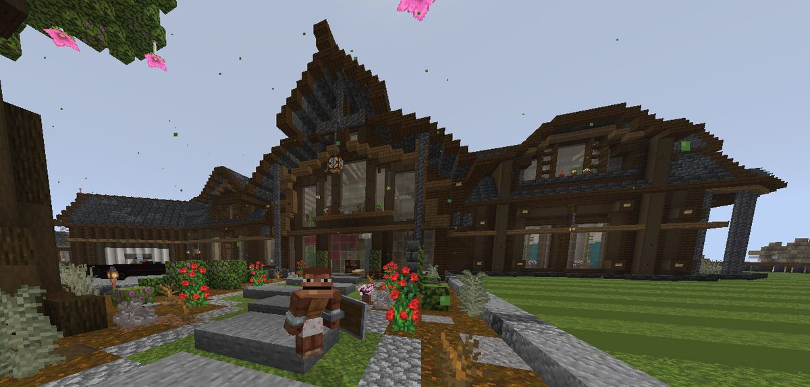
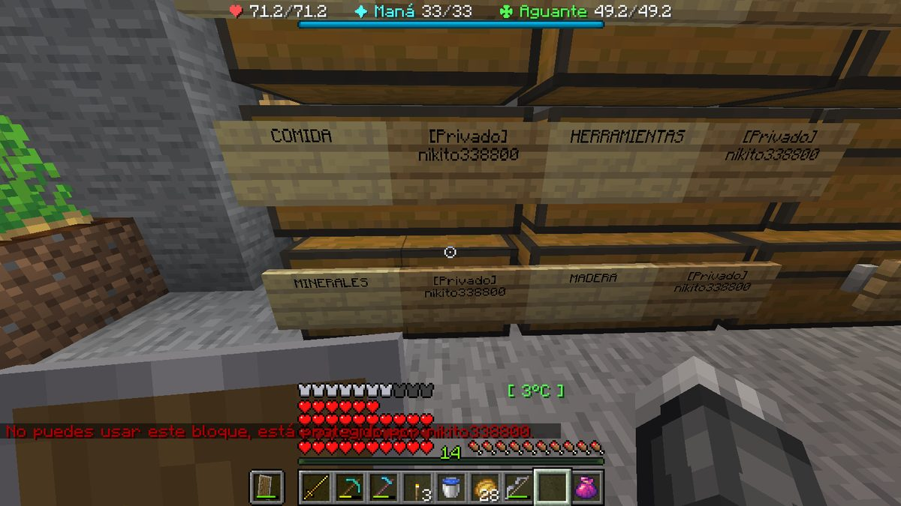
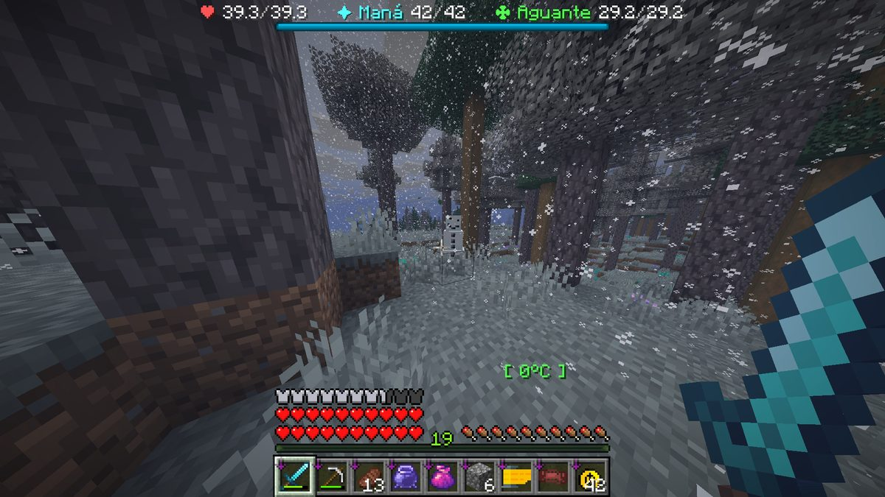
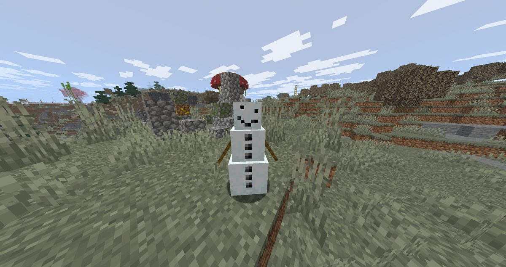
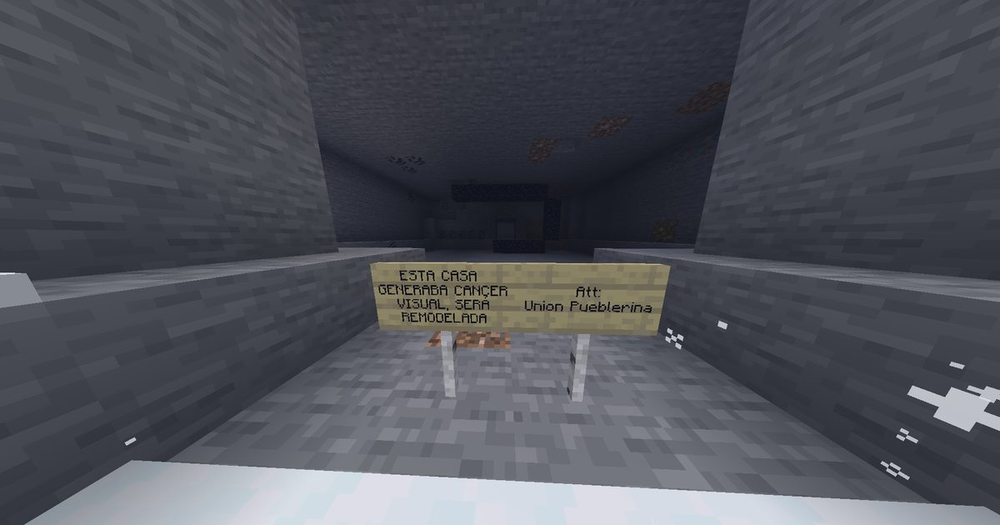
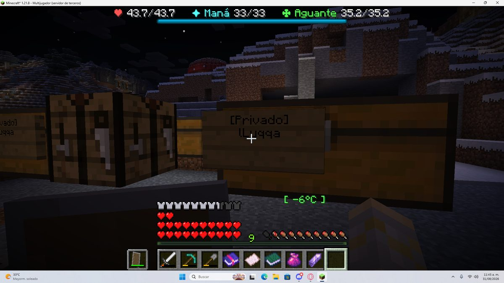
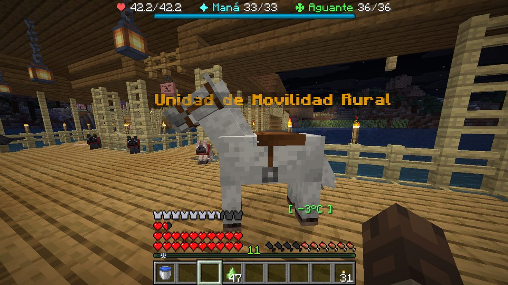

Boletín Oficial del Ayuntamiento del Reino · Se informa, no se alarma
EL HERALDO DEL REINO
Número 930 de agosto de 2026Noche del domingo 30 al lunes 31 de agosto · SEGUNDA TIRADA, CORREGIDA
GANA EL CONCURSO DE VIVIENDAS EL QUE LO ORGANIZABA, CON UN CINCUENTA SOBRE CINCUENTA EN LO QUE PUNTUABA ÉL
Doce casas visitadas, once puntuadas y un ganador que se puso 10 en fachada, 10 en interior, 10 en utilidad, 10 en encaje y 10 en originalidad. El vecindario, que puntuaba el sexto apartado, le dio 2,3: la segunda nota más baja de la noche y menos que el 3,6 que sacó un solar en ruinas. Y a la noche siguiente, cuarenta y un minutos después de cumplirse la única sanción de la historia del Reino, una casa entera había desaparecido con un cartel firmado en su sitio.
Redactado por la Oficina de Prensa del Ayuntamiento
PORTADA
Cincuenta sobre cincuenta en lo que puntuaba él, y 2,3 en lo que puntuaba el vecindario

La vivienda ganadora, en la fotografía que remitió su propietario a la 01:00, ya con las notas puestas. Obsérvense los setos alineados, los caminos de grava y el césped segado en franjas: tres elementos que no constan en ninguna otra de las once viviendas visitadas y que, por sí solos, explican cuatro de los cinco dieces.
Archivo Municipal · pase el ratón para revelarla
A las 20:07 del domingo, el Ministerio de Construcciones publicó las
bases del Primer Concurso de Viviendas del Reino. Seis apartados de diez puntos
—fachada, interior, utilidad, encaje, originalidad y votación popular—, sesenta puntos de
máximo, y una advertencia que este periódico reproduce entera porque no hace falta
añadirle nada: «el sistema es sencillo, transparente y estadísticamente bastante más
serio de lo que suele manejar el Ayuntamiento.»
A las 23:00 arrancaron las visitas, y el mismo comunicado que las convocaba
cerraba con esta línea: «el Ayuntamiento ya tiene preparada la versión oficial de los
resultados.» Consta.
Durante cuatro horas, entre ocho y once vecinos recorrieron doce viviendas en
fila, con parada, comentario y voto en cada una. Se puntuaron once. La duodécima no pudo
puntuarse porque ya no estaba en pie.
A la 01:00 se publicó la última acta, y es la de la vivienda número doce,
que resulta ser la del Ministro Pan: autor de las bases, redactor de las actas y
titular de los cinco primeros apartados. Sus notas: fachada 10, interior 10, utilidad
10, encaje 10, originalidad 10. Cincuenta sobre cincuenta. No hay ningún otro diez en
toda la noche, en ningún apartado y en ninguna casa.
El sexto apartado lo puntuaba el vecindario, que es el único al que el Ministerio no
podía ponerse nota. Le dio un 2,3. Es la segunda peor nota popular del
concurso, sólo por encima del 0,8 de una vivienda que consiste en dos cajones y un
barril; y es más baja que el 3,6 que ese mismo vecindario le puso a un solar
arrasado en el que no queda una pared. Total: 52,3. Ganador.
La reacción de la plaza se produjo a las 02:10 y consta con hora y con nombres.
NARUMl: «como que ganó Pan.»Mariowo_: «me robaron el primer
puesto.»ArsarFurro, que corrige: «nos robaron.»NARUMl otra
vez: «el robo del siglo.» Y Agustin.F, que fue el único en formular la
objeción de fondo: «en teoría Pan no tendría que participar, jajaja.»
Esta Oficina hace constar que al Ministro no se le acusa de nada. Redactó unas
bases claras, las publicó con antelación, visitó las doce casas, puntuó las once que
estaban en pie y ganó con arreglo a un procedimiento que él mismo había calificado de
transparente. Que además fuera el único concursante evaluado por quien lo evaluaba todo
es una circunstancia del calendario, y esta corporación no legisla sobre el
calendario.
A las 04:05, Mariowo_ anunció su entrada en la plaza con la fórmula que
este periódico adopta como titular de su sección de sociedad hasta nuevo aviso: «ya
llegó el ganador del concurso de casas.»
EL ESCRUTINIO
La casa más votada por los vecinos quedó séptima, y el único diez que dio la comitiva se lo dio al que manda

La segunda clasificada, de Gaaraham03, con 45,2: la única de la noche que pasó de siete en los cinco apartados del Ministerio. La levantó, en buena parte, Mazitrvrs. Diecinueve horas después de esta fotografía, otra casa suya sería noticia por lo contrario.
Archivo Municipal · pase el ratón para revelarla
Los dos escrutinios de la noche no se parecen en nada, y eso es lo interesante
del concurso. El Ministerio puntuaba cinco apartados y el vecindario uno, y salieron dos
Reinos distintos.
La vivienda más votada por los vecinos fue la de NARUMl, con un
8,4. Quedó séptima de once. La segunda más votada, la de Kaori, con
8,3, quedó tercera. Y la ganadora fue la penúltima en voto popular. Dicho de otro
modo: el apartado que medía si la casa gustaba y el bloque que medía todo lo demás
apuntaban en direcciones opuestas, y ganó el que pesaba cinco veces más.
Hubo además dos votos que este Negociado destaca por motivos opuestos. Uno lo
dio xTheChavitox, que en la casa del Ministro puso un 10 mientras el resto
de la comitiva ponía ceros, unos y doses; es el mismo vecino al que la plaza acusa desde
hace dos números de romper todo lo que toca, y anoche fue el único que le vio mérito al
que manda. El otro lo dio nikito338800, que puso un 0 y lo razonó en cinco
palabras: «0 por no ser humilde.»
Se hace constar, por último, que la comitiva sufrió dos bajas durante la propia
visita, ambas a manos del Ministerio y ambas de concursantes: Mariowo_ a las
23:23, con un objeto que figura en el acta de defunción como Mondadientes,
y NARUMl a las 00:18, precipitada desde altura. Las dos volvieron a
incorporarse al recorrido. Sus casas obtuvieron 3,8 y 32,4 respectivamente, y esta Oficina
no establece relación alguna entre ambos hechos porque nadie se lo ha pedido.
URBANISMO
Expediente 0062 — «Vivienda de Mariowo_»: dos cajones, un barril y un tres coma ocho

La parcela, fotografiada por el Ministerio a las 00:08. El técnico buscó la puerta durante un rato. En el centro de la imagen, los dos cajones y el barril que constituyen la totalidad de la edificación; alrededor, flores silvestres que no plantó nadie y que el acta recoge, con todo el rigor del mundo, en el apartado de jardinería.
Archivo Municipal · pase el ratón para revelarla
De las once viviendas puntuadas, ésta obtuvo 3,8 sobre 60, que es la nota más
baja emitida por este Ayuntamiento desde que existe el Ayuntamiento. El desglose es el
siguiente: fachada 2, interior 0, utilidad 0, encaje 0, originalidad 1 y 0,8
de voto popular. Tres de los seis apartados están en cero, lo que obliga a esta Oficina a
hacer constar que el interior se puntuó: hubo inspección, y el resultado de la
inspección fue cero.
La Oficina de Urbanismo desea, no obstante, dejar clara una cosa. El expediente
califica la obra, no a quien la levantó, y anoche la obra tuvo una noche
buenísima: fue la más comentada del recorrido, arrancó la única fotografía de la
jornada remitida por un tercero con el pie «miren nada más qué vintage», y su
propietario la reivindicó a las cuatro de la madrugada presentándose en la plaza como el
ganador del concurso.
Produjo además el único gesto de la noche que esta corporación no sabe puntuar. A las
04:13, NARUMl —cuya casa quedó séptima— escribió al interesado: «¿querés
que te construya una casita humilde cuando vuelva? Tengo materiales de sobra.» Y a
continuación explicó el motivo: «es que me dio penita tu casa.» Él declinó:
«era para la broma; sí, me construiré una.»
CALIFICACIÓN: NO ES UNA CASA, ES UN SITIO DONDE DEJASTE COSAS. Se deniega la
licencia. Se concede, en su lugar, autorización de acopio a cielo abierto, que es
la figura que corresponde y que no exige tejado. Plazo de subsanación: el que quiera.
SOCIEDAD
«No importa que no tenga hogar, tengo a mi familia»
La comitiva, a las 00:50, sobre lo que queda de la vivienda no clasificada. La fotografía la tomó el propio damnificado. Aparecen ArsarFurro, nikito338800, GabbyQuill635, Rawson98, xTheChavitox, Cliqueame, Mariowo_ y el Ministro Pan. Ninguno se estaba riendo.
Archivo Municipal · pase el ratón para revelarla
La duodécima vivienda del recorrido era la de Rockchango, y no pudo
puntuarse. El acta del Ministerio lo recoge con una raya en cada uno de los cinco
apartados y una advertencia: «la vivienda no entra en la clasificación debido a que
fue recientemente atacada y destruida prácticamente en su totalidad.» Se conservó
únicamente la votación popular, «a título de referencia»: 3,6. El solar
arrasado sacó, en el único apartado que se le pudo puntuar, más nota que la casa que
ganó el concurso.
A las 00:50, un minuto después de publicarse esa acta, el interesado envió a la
plaza la fotografía que ilustra esta pieza, con siete palabras: «no importa que no
tenga hogar, tengo a mi familia.» En la imagen hay ocho vecinos de pie sobre los
restos de su casa, a la una menos diez de la madrugada, en invierno y bajo cero,
esperando turno para votarle un solar.
Este periódico traía preparada para esta pieza una frase sobre la solidaridad vecinal.
Se retira. La fotografía lo dice mejor, y encima la hizo el damnificado.
ARCHIVO GRÁFICO
La casa que nos mandó no está en el Reino: el Negociado lleva toda la mañana buscándola

La fotografía remitida a las 21:57 con el pie «mi nueva casa para el concurso, espero les guste». Nótense el cerezo en flor —no hay ninguno en la parcela del remitente, que estaba nevada—, el ventanal de dos alturas y el seto recortado. Una hora después empezaba el recorrido y esta casa no se visitó, porque nadie sabía dónde estaba.
Archivo Municipal · pase el ratón para revelarla
A las 21:57 del domingo, una hora y tres minutos antes de que arrancara el
recorrido, este Heraldo recibió por el conducto habitual la fotografía de arriba, firmada
por Rockchango y acompañada de la frase «mi nueva casa para el concurso, espero
les guste». La respuesta de la plaza fue una sola sílaba, de Mazitrvrs:
«ufff.»
El Negociado de Archivo y Fototeca ha cotejado la imagen con el registro de
edificaciones y con las doce viviendas visitadas esa noche, y ha de informar de lo
siguiente: ese edificio no está en el Reino. No coincide con ninguna de las once
casas puntuadas, no coincide con la del Ministerio, no consta en el catastro, no lo ha
visto nadie y la estación que se ve por la ventana no es la que había esa noche.
Dos horas y cincuenta y tres minutos después de mandarla, el remitente recibía en su
parcela una comitiva de ocho personas y la parcela estaba vacía.
Esta Oficina no acusa de nada al remitente, entre otras cosas porque no hay
infracción que aplicar: el reglamento del concurso obliga a tener una casa, no a mandar la
fotografía de la casa que uno tendría. A este vecino le derribaron la suya hace cuatro
jornadas, sigue sin reconstruirla, y esa noche mandó una imagen de cómo debería ser el
mundo. Es, con diferencia, la reclamación urbanística mejor presentada que ha
recibido esta corporación.
Se abre por ello el expediente 0063, no contra él, sino para localizar el
edificio. Si aparece, el Ayuntamiento se lo adjudicará al remitente por procedimiento
de urgencia y lo dará por concursado con efectos retroactivos. Si no aparece, el
expediente se archivará junto a los otros dos que este Negociado mantiene abiertos sobre
cosas que sólo ha visto una persona.
EL CONSULTORIO
Las diez preguntas de nikito338800, de la más razonable a la menos
El Negociado de Información al Vecino ha tramitado esta jornada un volumen de
consultas sin precedentes, y el criterio para dedicarle una sección entera a un solo
vecino es objetivo y se publica: de las 759 frases dichas anoche en la plaza,
249 fueron suyas; y de las 103 preguntas formuladas, 58. Más de la
mitad de todo lo que el Reino quiso saber anoche lo quiso saber una persona.
Se reproducen diez, todas de esta jornada, todas literales y ordenadas de la más
razonable a la menos. La ordenación la ha hecho este Negociado y admite reclamación.
1. «¿Dónde se consiguen las recetas? ¿O son de misiones?»(21:51) —
Pregunta impecable. Contestada en el mismo minuto y por el Ministerio en persona: son de
misiones. Este Negociado la incluye la primera para que se vea que las había buenas.
2. «¿Y por qué me sale que tengo recompensas para reclamar en el tablón?»(21:55) — Correcta, pertinente y formulada tres veces en una hora —21:05,
21:55 y 22:01— porque las dos primeras se perdieron entre otras cuarenta. Contestación
oficial: «porque las tienes.» Repregunta inmediata: «¿y qué tablón?»
3. «La casa del buzón lleno, ¿alguien sabe en qué parte de la villa está?»(21:22 y 22:17) — Razonable: hay cuatro buzones y sólo uno está lleno. No
contestó nadie a ninguna de las dos. La encontró él solo a las 22:18 y lo comunicó
con dos palabras: «ª la encontré.»
4. «¿Qué tan grande es el mapa?»(21:53) — Legítima. La contestación
del Ministerio queda para el archivo de esta casa: «pues no recuerdo, varios
miles.» Es, hasta la fecha, el dato oficial.
5. «¿Hay biomas fuera del reino, así decirlo? Si yo cojo un barco y me voy, ¿es
normal?»(21:54) — Aquí el vecino está preguntando, con toda la educación del
mundo, si tiene permiso para irse. Contestación: «poder puedes.» Esta
Oficina hace notar que ningún reglamento municipal se lo impide y que preguntarlo antes
dice mucho de él.
6. «Las cabras, ¿las puedo matar? Es por la misión.»(00:02) —
Formulada dentro de la casa de otra persona, en mitad de la votación y sin bajar la
voz. La Gran Guerra Cabra sigue abierta, de modo que la respuesta administrativa es sí,
pero no era el sitio. Perdió la casa siguiente por irse a matar cabras y lo comunicó:
«me perdí porque estaba matando a las cabras.»
7. «Maté una cosa y me dio pepitas, pero no son pepitas» y, sin respirar,
«una cosa rara de mi suegra, wtf»(las dos a las 22:34, y son dos) — No es exactamente una pregunta, pero el Negociado la admite a
trámite por su valor descriptivo. El objeto existe, se llama así, y la contestación del
Ministerio fue la correcta: «tú guárdalo.»
8. «¿Por qué tienes una uva?»(23:32) — Dicha en voz alta durante la
valoración de una vivienda, sin destinatario identificable, sin respuesta, y sin que
conste ninguna uva en la fotografía del acta.
9. «¿El barco vuela?»(00:39) — Formulada a las doce y treinta y nueve
de la noche, en la penúltima casa del recorrido, en el mismo minuto que una afirmación
del mismo vecino sobre la velocidad que le da su espada. No contestó nadie. La siguiente
frase que consta suya es «wtf», de lo que este Negociado deduce que la respuesta
fue afirmativa.
10. «¿Cómo mierda se encienden las luces del teclado?»(21:54) —
Formulada en la plaza del Reino, entre una pregunta sobre navegación marítima y otra sobre
el tablón de recompensas, a nueve vecinos que estaban hablando de otra cosa. No
contestó nadie, nunca. Este Negociado ha estudiado la consulta durante toda la mañana,
ha determinado que no es competencia municipal y ha resuelto dejarla abierta de
todos modos, por si alguien lo sabe.
El Negociado agradece públicamente al vecino su actividad y le hace saber que, gracias
a él, este Ayuntamiento ha descubierto que no sabe el tamaño de su propio Reino.
ADMINISTRACIÓN
El censo le negó a un vecino unos arcones que llevan su nombre escrito en el cartel

La fotografía que remitió el afectado a las 18:17. Arriba, sus arcones, y encima de cada uno el cartel que puso él: COMIDA, HERRAMIENTAS, MINERALES, MADERA, los cuatro con su nombre debajo. Abajo, en rojo, la contestación de la administración: «no puedes usar este bloque, está protegido por…», y a continuación su propio nombre.
Archivo Municipal · pase el ratón para revelarla
Es el episodio más limpio de burocracia pura que ha registrado este periódico, y cabe
en una línea: el Reino le dijo a un vecino que aquello era de un señor que era él.
Ocurrió por lo siguiente. Este mismo lunes, el Ministerio corrigió un defecto del
censo de entrada que venía dando a algunos vecinos dos fichas distintas —una
buena y otra en blanco— según cómo hubiera amanecido el censo esa mañana. Al corregirlo,
quienes habían sido inscritos por la vía torcida volvieron a su ficha buena, que es
lo que había que hacer; y los arcones, que recuerdan a quién pertenecen por el número de
ficha y no por el nombre del cartel, se quedaron mirando a la ficha antigua.
El Ministerio lo anunció por adelantado y por escrito, con los tres desenlaces posibles
enumerados —que apareciera el personaje reiniciado, que no abrieran los arcones, o
«ambas cosas, porque este mundo siempre puede aportar una desgracia extra»— y
pidiendo que se le dijera cuál. El afectado dijo cuál. La contestación oficial, a las
19:13, fue: «si sigue sin dejarte abrir los arcones, al entrar yo te lo
arreglo.» Al cierre de esta edición seguía sin poder abrirlos y había resuelto el
problema por su cuenta, del modo en que se resuelven las cosas en este Reino: «he
hecho un arcón temporal y he dejado ahí lo del día.»
No reviste gravedad. Es, además, el segundo vecino en tres jornadas al que sus
propios arcones no le reconocen, y esta Oficina ha dejado de considerarlo una casualidad.
SOCIEDAD
Entró el invierno a las 22:21, treinta y nueve minutos antes del concurso

El Reino a las 03:17, con el cambio de estación ya consumado y cero grados en la calle. Al fondo, en el centro, el nuevo vecino de la pieza de al lado. La fotografía es de TitanWarhammer, que la remitió sin comentario.
Archivo Municipal · pase el ratón para revelarla
A las 22:21 del domingo, el Reino entró en INVIERNO. Lo anunció, como
viene siendo costumbre, un vecino y no el Ayuntamiento: nikito338800 escribió
«inviernooo» y Cliqueame contestó, en el idioma de las profecías,
«winter has come».
Treinta y nueve minutos después empezaba el recorrido del concurso, de modo que
once vecinos se pasaron cuatro horas de visita a la intemperie, de noche, con la
banda térmica de la estación entre doce grados bajo cero y cero. El registro de la
plaza recoge las consecuencias con precisión de parte médico: a las 00:27,
Cliqueame, en casa ajena y esperando turno para votar, informa de que «se me
están frizando las bolas»; a las 00:34, nikito338800: «la puta
madre, me estoy congelando»; y ya el lunes por la tarde, SerSM15 resume la
estación entera en dos partes, «cómo me jode la puta nieve» y «mierda de
frío, tendré que hacerme una mierda de armadura de cuero».
El Ayuntamiento recuerda que la estación durará 68 días, que la armadura de
cuero abriga, y que este año, por primera vez, no ha prometido leña a nadie.
PADRÓN
Alta de oficio: un vecino nuevo, de tres piezas, con sombrero

El interesado, en el momento del alta. Lleva seta roja por sombrero y no ha declarado domicilio. La fotografía es de ArsarFurro, que la remitió a las 03:15 con dos palabras de presentación: «un nuevo vecino».
Archivo Municipal · pase el ratón para revelarla
Se hace constar el alta, a efectos de padrón y con las reservas del caso, del vecino
que ilustra esta pieza. Constan estatura de tres cuerpos, brazos de rama,
tocado vegetal no reglamentario y ninguna declaración de ingresos.
Este Ayuntamiento lo inscribe en el epígrafe de composición irregular, que se
abrió hace dos números para un armadillo al que este periódico llamó caballo, y que
empieza a demostrar una utilidad que no previó nadie. El interesado no ha reclamado, no ha
votado en el concurso, no ha muerto y no ha hecho una sola pregunta, lo que le
convierte, a día de hoy, en el vecino modelo.
SERVICIOS
El parte del pulso: la fragua cobraba veinte por no arreglar nada, y ocho de doce destrezas se apagaban solas
Relación de medidas correctoras adoptadas desde el número anterior. Como es
costumbre, ninguna reviste gravedad y todas estaban previstas.
La fragua cobraba y no reparaba. Lo denunció un vecino con una pregunta
excelente: «las armas del oficio, al romperse, no se pueden reparar en el yunque; te
dice que el arma está rota. ¿Cómo se repara?» Tenía razón, y la culpa no era del
yunque corriente sino del nuestro. La fragua cobraba sus 20 Cacahuates y a
continuación miraba el desgaste equivocado: el de la herramienta común, no el del arma de
oficio, que lleva su propia cuenta aparte. Resultado: una espada podía estar rota del
todo y figurar impecable, la fragua contestaba «esto ya está entero, muchacho» y el
vecino se quedaba sin arma y sin veinte Cacahuates. Corregido: ahora repara el número
bueno. Y queda contestada la pregunta de fondo, que era buena: que el yunque corriente no
arregle estas armas es a propósito; la reparación de este Reino es la fragua, y
para entrar en ella hay que haber pasado por El Aprendiz al Revés, cosa que han hecho once
personas.
Ocho de las doce destrezas físicas se apagaban solas. Salió tirando del hilo de
una consulta sobre el aguante, y lo que había debajo era peor que lo que se
preguntaba: el coste de una destreza subía con el grado del vecino y el pozo del que se
paga no subía nunca. A grado alto, ocho de las doce destrezas del Abuelo, el
Funcionario y el Loco eran directamente inejecutables, y las tres que gastan
aguante ni siquiera lo mencionaban en su descripción. Ahora ningún coste pasa de la
mitad del pozo, el aguante máximo crece con el grado, el atributo que se llama Aguante por
fin da aguante —era lo único que no lo daba— y el Aguante de Mate lo regenera, que es lo
que su ficha prometía desde el primer día. De paso se ve lo que antes no se veía:
la barra de aguante está a la vista y dice cuál falta. TitanWarhammer, a las 22:27:
«ah, ya me pusieron el aguante, gracias.»
La Bolsa era sólo para el Ayuntamiento. Y no desde el jueves: desde el 18 de
julio. En todo ese tiempo no se ha comprado una sola participación de las trece
compañías, y no porque nadie quisiera: quien lo intentaba recibía un «no tienes permiso» y
ningún registro dejaba constancia. Eran tres puertas y esta corporación creía que
eran dos; la tercera venía cerrada de origen. Abierta. La Cartilla del Banco sigue
haciendo falta, que para eso está.
Felipe pedía arañas equivocadas. El encargo de otoño decía «arañas de cueva,
chicas, rápidas» y «vienen de las galerías viejas», pero contaba las otras.
NARUMl le hizo caso, bajó a una galería vieja, mató tres y el contador se quedó en
cero: «tengo una misión que dice matar araña de cueva, maté y no me las cuenta.»
Ahora Felipe habla de las gordas y avisa en seco: «las de las minas, las chicas, ésas
no las cuento; ni bajes.»
Tres vecinos tenían razón y el impreso no. Van seguidos, y los tres son culpa de
esta administración. Uno: el plano de faenas mandaba traer roble y el encargo pedía
abedul, en los tres pasos; xTheChavitox llevaba desde la noche anterior
intentando entregar lo que le mandaban y había concluido, con toda la lógica, que el
problema era su idioma. No lo era, y lo zanjó el Emperador en once palabras. Dos: la
Mesa de Sellado no estaba puesta; nikito338800 preguntó a las 03:12«no me deja entregarle los sellos, ¿es de alguna misión?» y a las 03:27
«¿para qué son los sellos esos que han soltado?» — no era él: era que faltaba la
mesa, y ya está en su sitio. Y tres: el impreso del ahumado hablaba del «hueco del
fuego», que todo el mundo entendió como un sitio del suelo y resulta que era una
ventana; Agustin.F se pasó una hora mirando abajo, donde no se le podía
poner nada, y lo dijo por escrito con dos fotografías.
Y el zurrón, que era lo más pedido, va por el doble. De 54 huecos a 106,
repartidos en dos páginas. Se pidió por escrito y con fotografía hace dos jornadas y se
agradeció con la misma economía de medios: xTheChavitox, a las 19:01,
«gracias por expandir el zurrón».
Y en un solo párrafo, porque ninguna reviste gravedad: encantar cuesta Cacahuates
desde agosto y no lo decía ningún sitio, así que la terminal de la plaza estrena ficha
con los dos precios y con lo que de verdad confundía —el número que sale al lado no se
gasta, es el grado— · el amuleto vuelve a la circulación con cinco tiradas ·
las cuatro faenas de estación quedan jugables, y la de otoño ya no depende de tener
una mina cerca · las birras de la bodega no se sellaban nunca porque el ahumador
del sótano era, en efecto, un ahumador · este Heraldo ya se puede coger dentro del
Reino, que hasta ayer se publicaba y no había manera de llegar hasta él · y se ha
inspeccionado el Centro Municipal de Reconsideración, del que este periódico ha de
informar que la puerta no cierra: retiene la mano del interno, no sus piernas, y
quien no tenga muros a los lados sale andando. Se traslada al Negociado de Obras,
que ya tiene abierto el expediente del pollo.
Queda por último la rectificación de la jornada, y es sobre el censo de entrada.
Se informó el domingo de que los vecinos que no podían entrar era cosa del registro
exterior y de que aquí no se podía hacer nada salvo esperar. No era eso. El
registro exterior falló, sí, pero lo que dejaba a la gente fuera era el remedio que
había puesto esta administración para los que ya habían fallado antes: los encerraba
en la puerta que venía a abrirles. Corregido. Y hecha la advertencia de costumbre: quien
entre y se encuentre sus arcones cerrados que lo diga, que se abre uno por uno.
Todas estaban previstas.
FE DE ERRATAS
Este número vuelve a salir hoy corregido, y la corrección la ha pagado el Heraldo con los doce Cacahuates que le quedaban
Esta Oficina rectifica. El número de ayer salió con cuatro errores, los cuatro
imputables a esta casa y ninguno al vecindario, y se enumeran antes de explicar nada, que
es el orden que corresponde.
Uno. Donde decía «Sí» debía decir «No». A la pregunta de si el vecino sancionado
fue quien derribó la casa, este Heraldo contestó que sí y tres palabras después publicó lo
contrario: que la casa derribada era la suya. Las dos cosas no caben en la misma línea. La
buena es la segunda. A un vecino que acababa de cumplir su condena se le ha atribuido
durante una jornada entera un derribo que sufrió. Es el error más grave que ha
cometido este periódico desde que existe, y no admite atenuante.
Dos. Un vecino contado como dos. El vecino que a las 19:16 preguntó quién había
tirado la casa y el vecino de las diez preguntas del consultorio son la misma
persona, nikito338800. Este Heraldo lo publicó con dos nombres en dos páginas
distintas, y para el segundo usó el nombre de otro vecino que existe y que esa noche no
estaba. Queda deshecho el enredo y quedan pedidas las dos disculpas.
Tres. Segundos que aquí no ha medido nunca nadie. El registro de la plaza anota
la hora y el minuto. No anota el segundo. Ayer se publicó que una consulta se
contestó «en once segundos», que una frase llegó «ocho segundos después» de otra y que dos
vecinos escribieron «a los sesenta segundos». Esos tres datos no constan en ningún
sitio: los redondeó la redacción para que la frase quedara mejor. Van corregidos al
minuto, que es lo único que hay.
Cuatro. Se le ha arreglado la ortografía a la gente. Las voces de la plaza se
publican como se dicen. En el número de ayer aparecen escritas mejor de lo que se dijeron,
y una cita reúne dos frases distintas en una sola como si el vecino las hubiera
dicho de corrido. No es un adorno inocente: cuando alguien escribe a las tres de la mañana
y con prisa, la prisa es la noticia. Queda dicho y no se repetirá.
Y ahora el motivo, que esta Oficina publica porque es lo único que le queda por
publicar. El Heraldo del Reino se sostiene con una asignación anual del Ayuntamiento. La de
este ejercicio fue de doce mil Cacahuates. De esos doce mil, el Ministerio de
Construcciones ejecutó once mil novecientos ochenta y ocho —el 99,9 %— en un
único asiento, con fecha anterior al concurso de viviendas y con esta descripción íntegra
en el libro de cuentas:
PARTIDA 0001 · CONCEPTO ÚNICO. Adquisición.
Eso es todo lo que dice. No dice qué se adquirió, ni a quién, ni para qué. El impreso
tiene dieciséis apartados y están rellenados el primero y el último. Al Heraldo le quedaron
doce Cacahuates para cubrir una jornada de veintitrés horas y veintiséis minutos,
setecientas cincuenta y nueve frases, ciento tres preguntas, doce viviendas y un derribo:
un Cacahuate por vivienda. Con doce Cacahuates no se paga a un segundo par de ojos,
de modo que el número de ayer lo repasó el mismo que lo escribió, de madrugada y de
corrido, y salió con cuatro erratas y con un sancionado acusado de lo que le habían hecho.
Esta Oficina no presenta eso como excusa. Lo presenta como cuenta.
Y esta Oficina no acusa al Ministerio de nada. Conviene subrayarlo, porque el
Ministerio —sin que nadie se lo pidiera, sin que se le preguntara y antes de que este
Heraldo hubiera publicado una sola línea del asunto— ha remitido a esta redacción una nota
de tres líneas en la que hace constar que la adquisición no guarda relación alguna
con el concurso de viviendas, que el concepto único no es un caballo y que la
coincidencia de fechas es una coincidencia. Se publica íntegra por deber de
imparcialidad, y por el mismo deber se hace constar que nadie había mencionado ningún
caballo.
Queda abierto el expediente 0064, y por una vez no es contra nadie: es para
averiguar qué es el concepto único. Se tramitará con el presupuesto disponible, de modo que
el Ayuntamiento ruega paciencia y, si es posible, que nadie se muera mientras tanto,
porque la esquela también se paga.
Edición imperial · Pliego de Oro · se imprime aparte
LO QUE DICE EL EMPERADOR
Exégesis oficial de las palabras de Su Majestad
Cuarta entrega. Jornada de parquedad histórica: el Emperador Duke pronunció seis frases y ninguna pasa de once palabras. Este Negociado ha renunciado a extraer de ahí una doctrina y se limita, como manda su reglamento, a extraerla igualmente.
Igual va mejor, o igual va peor.
— S. M. el Emperador Duke, a las 16:55
Lo que estaba pasando Dicho al reabrirse el Reino tras la revisión del pulso de la tarde, y dirigido a los vecinos que llevaban desde la mañana sin poder entrar.
Lectura oficial Adviértase que Su Majestad enuncia las dos únicas posibilidades y no se compromete con ninguna. Esta Oficina, que en nueve números ha prometido veintitrés mejoras y ha cumplido algunas, reconoce en esa frase una honradez administrativa que no está a su alcance. Se ordena su fijación en el tablón de la plaza, sin firma, para que el vecindario la lea sin saber de quién es y le haga caso igual.
★ ★ ★
El impreso pide tablones, no troncos.
— S. M. el Emperador Duke, a las 10:38
Lo que estaba pasando A un vecino que llevaba desde la noche anterior intentando entregar un encargo y que había concluido, razonablemente, que el problema era que él lee el mundo en otro idioma.
Lectura oficial Aquí Su Majestad hace en once palabras lo que este Ayuntamiento no ha conseguido en nueve números: desmentir una teoría sin humillar a quien la tenía. El vecino no se había equivocado de idioma, se había equivocado de madera, que es un error mucho más digno y además el que comete todo el mundo.
★ ★ ★
Lo miro.
— S. M. el Emperador Duke, a las 16:06
Lo que estaba pasando Respuesta íntegra a un vecino al que el censo le pedía una contraseña que nunca había puesto. Cuarenta y nueve minutos después el mismo vecino podía entrar.
Lectura oficial Dos palabras y un plazo de cuarenta y nueve minutos. Este Negociado ha cotejado esa cifra con la media de respuesta de los servicios municipales, que es de tres jornadas y una rectificación, y ha resuelto no publicar la comparación.
★ ★ ★
Oficina de Prensa · Negociado de Exégesis Imperial
Negociado de Estadística y Mérito
EL ESCALAFÓN DE LA JORNADA
Noche de concurso, y se nota en los dos sentidos: las defunciones caen a la mitad —25, frente a las 53 de la víspera— porque medio Reino se pasó cuatro horas de visita y no de faena, y aun así se cerraron 65 encargos. Encabeza la lista Rawson98, que llegó al recorrido con hora y media de retraso, votó igual y se fue a trabajar.
PRIMERORawson9815 encargos
SEGUNDODemaxxp12 encargos
TERCEROCliqueame10 encargos
65encargos cerrados19vecinos en el Reino25defunciones11a la vez, como más
Encargos cerrados esta jornada
Defunciones por vecino
Qué se llevó a los vecinos
Vecinos dentro del Reino, hora a hora
Las cifras se toman del registro municipal de entradas, salidas, méritos y defunciones. El Negociado hace constar una discrepancia con el parte de esta misma página: el parte anota 12 vecinos a la vez a las 22:47 y este escalafón anota 11, porque el escalafón toma la medida cada cuarto de hora y esa noche el Reino se llenó y se vació entre dos medidas. No se maquilla: son dos negociados contando lo mismo de dos maneras.
Vence la sanción a las 17:50. A las 18:31 la casa del sancionado ya no existía, y en su sitio había un cartel firmado

Lo que hay hoy en el solar, fotografiado por el Ministerio. Dos carteles plantados en el suelo, uno al lado del otro. El de la izquierda: «esta casa generaba cáncer visual, será remodelada». El de la derecha, la firma: «Att: Unión Publerina». Alrededor no queda un solo pedazo de la edificación anterior.
Archivo Municipal · pase el ratón para revelarla
Los hechos, por orden y sin conclusión, que es como los publica esta sección.
17:50 del lunes. Vence el plazo de veinticuatro horas de la primera y única
resolución de convivencia dictada en el Reino. El Centro Municipal de Reconsideración
cierra al público y vuelve a alojar a un solo interno, Don Clocencio, ave, que
cumple hoy su cuarta jornada sin fecha de juicio.
18:26.Gaaraham03 entra en el Reino. 18:31, cinco minutos después,
remite dos fotografías con esta frase: «acabo de entrar e iba yendo para el reino y me
encuentro eso.»SerSM15 pregunta si es la suya. El Ministerio pregunta de
quién es la casa. Él contesta con una tercera fotografía, la de los arcones, que es la que
publicamos en la pieza de al lado.
18:41. El Ministerio, por escrito: «joder, lo que faltaba. Al salir de
trabajar lo miro.»18:43, Mazitrvrs, que la había construido: «ahí
se supone que tendría que estar la casa.» Y en el minuto siguiente, la única
valoración económica que consta del suceso: «por suerte me pagó de antemano.»
19:16. El vecino nikito338800 —el mismo del consultorio de la página siguiente— formula en voz alta lo que estaba pensando media
plaza: «ése fue el que destruyó la casa e hizo cosas a los demás, ¿no?» No. Este Heraldo
contestó ayer que sí y en la misma línea publicó lo contrario, que es la primera de las
cuatro erratas que se rectifican en la última página. El sancionado no derribó nada anoche:
la casa derribada es la suya, y llevaba cuarenta y un minutos de vecino libre cuando
se descubrió el derribo.
19:17. El Ministerio publica la fotografía del cartel y añade siete palabras:
«ya me han contactado, la están remodelando.»
Las coartadas. A las 18:31, momento del aviso, había dos personas dentro del
Reino: SerSM15, desde las 18:14, y el propio Gaaraham03, desde las 18:26.
Los doce restantes entraron después: el primero un minuto más tarde y el último
cuatro horas y media después. El Ministerio entró a las 21:28, dos horas y cincuenta y
siete minutos después, dato que esta Oficina publica porque publica todos y no porque
se le acuse de nada. Y el interesado, el propietario de la casa derribada, no consta
que entrara en el Reino en toda la jornada: ni antes, ni durante, ni después de que se
le cumpliera la sanción.
Es la segunda actuación firmada de la Unión Publerina. La primera fue el
levantamiento de unos faroles, con acta de entrega y todo, y ya entonces hizo constar esta
corporación que no le reconoce potestad para retirar nada de nadie, entre otras
cosas porque no reconoce a la Unión Publerina, que no figura inscrita en ningún registro,
no ha presentado estatutos y no ha pedido subvención. Se hace notar, sin subrayarlo, que
sí tiene el teléfono del Ministerio.
LA PRUEBA
Lo único que quedó en pie fueron los arcones, y llevan el nombre escrito

La fotografía con la que Gaaraham03 contestó a la pregunta de a quién pertenecía la casa. Los arcones alineados a la intemperie, sin muros, sin techo y sin nada alrededor, cada uno con su cartel: «[Privado]» y, debajo, el nombre del propietario. Temperatura en el momento de la toma: seis grados bajo cero.
Archivo Municipal · pase el ratón para revelarla
Es la parte del suceso que más ha llamado la atención de este Negociado, y no por
morbo: los arcones están intactos. Quien retiró la casa se llevó las paredes, el
tejado, el suelo y los cimientos, y dejó en pie, alineados y cerrados, los arcones con
nombre. Ninguno consta forzado.
Esto convierte el asunto, a efectos de esta corporación, en algo distinto de un robo.
Nadie se llevó nada de nadie: se retiró un inmueble y se respetó el mobiliario, que
es exactamente lo que hace este Ayuntamiento cuando ejecuta una demolición, sólo que este
Ayuntamiento tarda tres semanas y emite once documentos.
Consta además, por si sirviera de algo, que cuatro jornadas antes una vecina
pidió al Ministerio que fuera a esos mismos arcones a recoger un lote de libros que el
propietario le había prometido antes de ingresar. El Ministerio fue. Los libros estaban.
Se entregaron. «El último arcón de atrás a la derecha», decía la instrucción, y
era exacta.
Oficina de Prensa · Negociado de Orden y Convivencia
♥ El Corazón del Reino ♥
LO QUE SE DICE EN LA PLAZA Y NADIE ESCRIBE
Sección de vida sentimental y asuntos del querer. Lo que aquí se publica consta en el archivo municipal. Lo que cada cual deduzca de ello, no.
EL CORAZÓN DEL REINO
El banco de la casa ganadora, la reclamación de las 02:51 y una defensa que no se puede rebatir
La imagen obra en el archivo desde las 02:45. Un banco de madera en el porche de la vivienda ganadora, el césped segado en franjas al fondo, y encima del banco dos vecinos: a la izquierda, sentado, el propietario del solar arrasado; a la derecha, en una postura que esta Oficina renuncia a describir, el propietario de la casa.
Archivo Municipal · pase el ratón para revelarla
Consta en el archivo de esta casa, remitida por ArsarFurro a las 02:45 —o
sea, una hora y cuarenta y cinco minutos después de proclamarse el resultado del
concurso—, la fotografía de arriba, cuyo pie original no se reproduce por decoro y cuya
única palabra publicable es «abusando».
A las 02:51, el vecino de la izquierda presentó reclamación en dos escritos
consecutivos: «quiero poner una denuncia» y «me tocó sin mi
consentimiento». Este Negociado hace constar que la reclamación se presentó por el
cauce correcto, cosa que no había ocurrido nunca en el Reino con ninguna otra.
La parte contraria dejó pasar trece horas y treinta y dos minutos antes de
contestar, y contestó a las 16:23 con la única línea de defensa que un ayuntamiento
no puede rebatir: «es mi casa y puedo hacer lo que quiera en ella.» A efectos
administrativos es cierto. La casa había sacado, esa misma noche, un diez en utilidad.
Y el resumen de la jornada lo dieron SerSM15 a las 16:20, con una
pregunta, y ArsarFurro a las 16:22, con la respuesta. Pregunta: «¿a Rock no le
habían roto todo hace unos días?» Respuesta: «sip, la casa y ahora el culo.»
Este Negociado las publica íntegras, no las suscribe y da el asunto por cerrado por
agotamiento del vocabulario administrativo.
EL CORAZÓN DEL REINO
Una oferta de servicios a las cinco de la mañana, sin destinatario presente
A las 05:06, con cuatro personas en el Reino y el Emperador ausente —como
corresponde a su rango—, la vecina Demaxxp emitió en la plaza dos declaraciones
consecutivas que este Negociado transcribe sin alterar una coma: «Duke puede pisarme,
es un servicio que ofrezco» y, acto seguido, «con Duke yo haría el turno de noche
entero».
Esta Oficina se limita a describir lo que obra en el archivo y a no entenderlo. Consta
que la declaración se hizo en abierto, que no contestó nadie y que el
destinatario llevaba once horas sin pronunciar palabra. Consta también que es la
segunda vecina en cinco números en formular una oferta de esa naturaleza a la misma
persona, lo que empieza a configurar, a juicio de este Negociado, un patrón
administrativo más que un sentimiento.
Se archiva en el epígrafe «manifestaciones de adhesión institucional en horario
nocturno», que es el que se usa cuando no hay ninguna adhesión institucional.
Oficina de Prensa · Negociado de Vida Sentimental
Espacio cedido · Ministerio de Construcciones · Parque Móvil Municipal

El bien cedido, con su denominación oficial rotulada sobre el lomo en letra dorada y visible a distancia, tal y como exige el reglamento de señalización de bienes municipales que este Ministerio redactó anoche.
PLIEGO DE CONDICIONES DE LA UNIDAD DE MOVILIDAD RURAL
Se ha entregado un (1) caballo en concepto de premio de participación. El caballo no es un regalo: es una cesión. Léase esto antes de montarlo.
Primera. La Unidad de Movilidad Rural es propiedad del Ayuntamiento del Reino y se
cede en precario al vecino premiado, para su uso, disfrute y traslado. La titularidad no
se transmite. El nombre tampoco: no se le puede llamar de otra manera, ni
Blanquito, ni Nieve, ni nada parecido.
Segunda. El cesionario responde de la integridad del bien. En caso de que la
Unidad resulte herida, se estará a lo dispuesto por el Ministerio en su comunicación
del lunes a las 14:29, que se reproduce íntegra por ser el único artículo del pliego:
«se las verá en un infierno burocrático.»
Tercera. No se ha previsto procedimiento alguno para el caso de que la Unidad
resulte herida por causas ajenas al cesionario, ni para el caso de que se pierda, se
desoriente o se quede en un puente. Este Ministerio tiene conocimiento de que en el Reino hay
al menos dos caballos blancos con montura y de que ya se han confundido una vez. No es
asunto suyo.
Cuarta. La cesión no incluye pienso, cobijo, manta ni asistencia en invierno. La
estación durará sesenta y ocho días.
Ministerio de Construcciones del Reino · Negociado de Bienes Cedidos en Precario
Suplemento de interés humano · se reparte gratis con este número
OCHENTA Y OCHO HORAS EN EL REINO: LA JORNADA DE Mazitrvrs
Octava entrega, y el criterio vuelve a ser objetivo y vuelve a darlo el escalafón: ningún vecino ha estado más tiempo en el Reino —88 horas y 48 minutos repartidas en diez jornadas— ni ha muerto más veces, sesenta. Anoche construyó casas que no son suyas, cobró una por adelantado antes de que la derribaran, recogió el único premio que repartió el concurso, rescató un caballo ajeno y se pasó dos inviernos andando en línea recta hacia un pueblo que estaba en la otra dirección.
Oficina de Prensa · Negociado de Vida Vecinal
EL PREMIO
Le dieron un caballo, y el caballo venía con pliego de condiciones
El animal, fotografiado por el interesado a las 03:35 dentro de su propia vivienda. Sobre el lomo, en letras doradas y visibles desde lejos, el nombre con el que fue cedido: Unidad de Movilidad Rural. Temperatura ambiente: tres grados bajo cero.
Archivo Municipal · pase el ratón para revelarla
El concurso repartió un solo premio del que quede constancia pública, y no fue
para el ganador: fue por participar. A las 03:35, dos horas y media después
del fallo, Mazitrvrs lo agradeció con la única fórmula que cabía: «quiero
agradecer al Ministro el premio por participar en el evento de hoy», y adjuntó la
fotografía.
El premio es un caballo blanco. Y el caballo no se llama nada: se denomina. El
Ministerio, que lo cedió, le puso por nombre Unidad de Movilidad Rural, de modo que
el vecino no ha recibido un animal: ha recibido un bien municipal en régimen de
cesión, con el rótulo puesto encima para que no se le olvide.
Y por si quedaba alguna duda, el Ministerio publicó el pliego de condiciones once horas
después, a las 14:29, en una sola frase y sin destinatario: «como la unidad de
movilidad rural, cedida por el ayuntamiento, resulte herida, se las verá en un infierno
burocrático.»
LA CASA QUE COBRÓ POR ADELANTADO
Construye las casas de los demás, y anoche derribaron una que ya estaba pagada
La suya, la que sí es suya, en la fotografía del acta de las 23:30: un embarcadero sobre el agua con dos naves laterales y una columna de luz que se ve desde toda la costa. Sacó 8 en utilidad —la nota más alta de la noche en ese apartado— y 2 en encaje con el Reino, que es la más baja de todas. Total: 33,3.
Archivo Municipal · pase el ratón para revelarla
Este vecino aparece en el número de hoy tres veces y en tres papeles distintos,
y no ha buscado ninguno.
Como constructor. La segunda clasificada del concurso, con 45,2, es obra suya en
buena parte, y no es su casa. La vivienda derribada del pliego de sucesos también la
levantó él. Al enterarse del derribo escribió dos frases: «ahí se supone que
tendría que estar la casa» y, un minuto más tarde, la valoración económica más
seca que ha registrado este periódico: «por suerte me pagó de antemano.»
Como damnificado. Al día siguiente, a las 18:44, reconoció el motivo por
el que había entrado corriendo: «pensé que la habían borrado de la faz de la
tierra.» No era la suya. Era la del otro.
Como propietario. Su casa obtuvo un 8 en utilidad y un 2 en encaje con el
Reino, y esta Oficina entiende perfectamente el 2: el edificio es una terminal
portuaria de dos alas con faro, y a su lado el resto del Reino parece una acampada. El
acta no dice eso. El acta dice 2. Y él lo zanjó a las 03:32 de un modo que este
periódico considera insuperable como escrito de alegaciones: «mi puente es mejor que
tu casa.»
EL CABALLO DE LA VECINA
«Estaba perdido y desorientado. Tenía miedo y frío»
Última pieza, y es de la tarde del lunes. A las 18:54 preguntó en la plaza si era
de alguien un caballo blanco con montura que se había encontrado en el Reino. Tres
minutos después apareció la propietaria, GabbyQuill635: «perdí mi caballo
:c», «lo dejé en el puente del reino», «blanco».
La contestación fue inmediata y en dos tiempos. Primero la tranquilización: «vos
tranquila, que yo lo encontré.» Y después, sin que nadie se lo pidiera, el parte
de estado del animal: «estaba perdido y desorientado», «tenía miedo y
frío».
La plaza reaccionó como reacciona la plaza. SerSM15: «se te va a demandar
formalmente.»xTheChavitox: «maltrato animal.» Y él, a la
propietaria: «no le digas eso a Gabby.»
Cuarenta minutos más tarde se marchó a pie hacia el pueblo del norte, informando de que
llevaba dos inviernos andando en línea recta. Se le indicó que se había pasado. Se
murió por el camino. Y lo último que consta de él en esta jornada es que volvió al sitio
donde había muerto a buscar su caballo. No el de la vecina: el suyo, que también es
blanco, y que a estas alturas ya no se sabe cuál es cuál.
El parte de la jornada
Duración de la jornada
23 h 26 min, de las 20:22 a las 19:48
Vecinos en el Reino
19
Altas tramitadas
0 — la primera jornada sin una sola alta
Máxima concurrencia
12 a la vez, a las 22:47 (el escalafón anota 11: mide cada cuarto de hora)
Defunciones
25 — menos de la mitad que la víspera
Vecina con más defunciones
NARUMl, 5
Primera causa de muerte
una caída, 5
Segunda causa
la bicha del granero, 4 (quinta jornada al frente)
Defunciones causadas por el Ministerio
2, las dos de concursantes y durante la visita
Encargos del Reino cerrados
65 (eran 77)
Vecino con más encargos
Rawson98, 15, y llegó al concurso con hora y media de retraso
Frases dichas en la plaza
759
De ellas, de un solo vecino
249
Preguntas formuladas en la jornada
103
De ellas, del mismo vecino
58
Preguntas suyas sobre las luces de un teclado
1, sin contestar
Viviendas visitadas
12
Viviendas puntuadas
11
Puntuación máxima posible
60
Casas con un diez en los cinco apartados del Ministerio
1
Dieces repartidos al resto del Reino
0
Voto popular del ganador
2,3 — el segundo más bajo del concurso
Voto popular de un solar sin edificación
3,6 — más alto que el del ganador
Casa más votada por el vecindario
NARUMl, 8,4 — quedó séptima
Premios repartidos
1 — un caballo, por participar
Premios repartidos al ganador
0
Reclamaciones contra el resultado
4, todas entre las 02:10 y las 02:13
Reclamaciones admitidas a trámite
0
Fotografías recibidas de casas que no existen
1
Expedientes abiertos para localizar un edificio
1 — el 0063
Viviendas derribadas enteras
1, la del único sancionado
Minutos entre el fin de su sanción y el hallazgo
41
Arcones respetados en el derribo
todos, con nombre y ninguno forzado
Asociaciones vecinales que firmaron el derribo
1 — la Unión Publerina
Asociaciones vecinales inscritas en el registro
0
Llamadas recibidas por el Ministerio de esa asociación
1
Actuaciones firmadas de la Unión Publerina
2 en tres jornadas
Vecinos dentro del Reino en el momento del hallazgo
2, y uno era el que lo encontró
Jornadas que Don Clocencio lleva preso sin juicio
4
Personas retenidas a partir de las 17:50
0
Puertas del Centro de Reconsideración que cierran
0
Medidas correctoras adoptadas
17
Huecos del zurrón, antes y ahora
54 y 106
Impresos que mandaban traer la madera equivocada
1, en sus tres pasos
Horas que un vecino pasó buscando un hueco que estaba en la pared
1
Rectificaciones de esta Oficina sobre una explicación propia
1 — la del censo
Destrezas físicas que volvieron a funcionar
8 de 12
Cacahuates que cobraba la fragua sin reparar nada
20 por servicio, desde julio
Participaciones vendidas por la Bolsa desde el 18 de julio
0
Vecinos a los que sus propios arcones no reconocen
2 en tres jornadas
Palabras dichas por el Emperador
6
Jornadas que Fátima lleva sin acudir a su puesto
8
Lagomorfos avistados
0 (van 7 jornadas)
Aviso oficial
El Ayuntamiento del Reino informa de que el Primer Concurso de Viviendas se ha
celebrado con absoluta normalidad, con arreglo a unas bases publicadas con tres horas
de antelación, con visita a las doce viviendas inscritas y con un resultado que esta
corporación considera inatacable, entre otras cosas porque el órgano ante el que se
atacaría es el mismo que lo firmó.
Sobre las cuatro reclamaciones presentadas entre las 02:10 y las 02:13 —«el robo del
siglo» entre ellas—, este Ayuntamiento hace constar que ninguna alega irregularidad en el
procedimiento: todas alegan quién ganó, que es cosa distinta y no está prevista. Se
archivan con agradecimiento. Se hace constar igualmente, por rigor, que la única objeción
de fondo de la noche la formuló Agustin.F —«en teoría Pan no tendría que
participar»—, que llegó tarde, no votó y tenía razón.
En cuanto al derribo de la vivienda del vecino que acababa de cumplir su sanción, esta
corporación reitera que no reconoce a la Unión Publerina, no le reconoce potestad para
retirar inmuebles ajenos y no ha autorizado ninguna remodelación en ese solar. Hace notar, no
obstante, que la actuación se ejecutó dejando en pie los arcones del propietario, sin
forzar ninguno, y con cartel firmado y motivado plantado en el sitio, lo que la sitúa
por encima del estándar de este Ayuntamiento en materia de demoliciones. Se abre expediente.
No se sabe contra quién.
Por último, esta Oficina desea agradecer al vecindario las ciento tres preguntas
formuladas anoche, más de la mitad de ellas por una sola persona. Se han contestado cuarenta y
una. Las demás siguen abiertas, y una de ellas —la de las luces del teclado— seguirá abierta
indefinidamente, porque este Ayuntamiento no la entiende, no sabe a qué se refiere y ha
decidido, con toda la dignidad de la que es capaz, no volver a mencionarla.